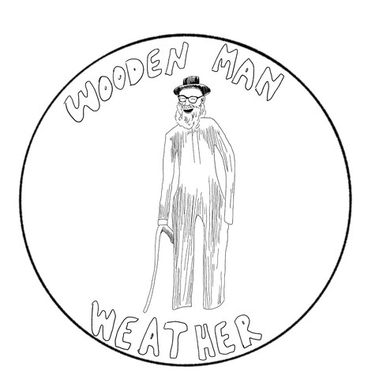

Wooden Man Weather
Dashboard
Weekly briefing
About
Wooden Man Weather
Marquette & the central U.P.
Outpost Dispatch

Marquette · Lake Superior Outpost
Expand
Global Human Thermometer
Today's high in Marquette of
60°F
leaves you colder than
74% of humanity
.
Out of 8.2 billion people on Earth today, approximately
6 billion
have a warmer daytime high.
Colder (0%)
Global Median (68°F)
Warmer (100%)
Expand
Big Lake and Flannels
Lake Superior Water
56°F
water
·
5.2 ft
waves
Grand Island buoy · 7:26 AM
Lake Breeze / Surf
Offshore Breeze
— Calm near shore · Beach warmth
Flannel Index
Level 3: Full Flannel
— Layer up · Jacket for the evening
Daylight
11h 18m
(-3m 16s/day)
Sunrise 7:58 AM · Sunset 7:16 PM
Moon
Waning Crescent
· 4% lit
Rises 5:39 AM · Next full Oct 26 (Hunter's Moon)
Expand
Current Monthly Temps vs. Recent Norms
Dashed lines = historical · Bold = avg highs · Lighter = avg lows
Diamonds = hottest day of each month this year
°F
0°
20°
40°
60°
80°
100°
Nov '25
Dec
Jan '26
Feb
Mar
Apr
May
Jun
Jul
Aug
Sep
Oct '26
Today's High:
60 °F
(+8 °F vs. recent normal)
Today's Low:
42 °F
Expand
Current Monthly Precip vs Recent Norms
Dashed = historical monthly normal · Bold = observed monthly total
Badges = last 30 days & 12 months through Oct 3 vs normal
in
0.0 in
2.0 in
4.0 in
6.0 in
Nov '25
Dec
Jan '26
Feb
Mar
Apr
May
Jun
Jul
Aug
Sep
Oct '26
Last 30 Days:
1.6 in
(-2.4 in vs. 30-day normal)
Last 12 Mo:
38.3 in
(+1.6 in vs. normal)
Expand
Current Monthly Snowfall vs Recent Norms
Dashed = historical monthly normal · Bold = observed monthly total
Badges = last 30 days & 12 months through Oct 3 vs normal
in
0 in
20 in
40 in
60 in
Nov '25
Dec
Jan '26
Feb
Mar
Apr
May
Jun
Jul
Aug
Sep
Oct '26
Last 30 Days:
0 in
(-1 in vs. 30-day normal)
Last 12 Mo:
277 in
(+80 in vs. normal)
Expand